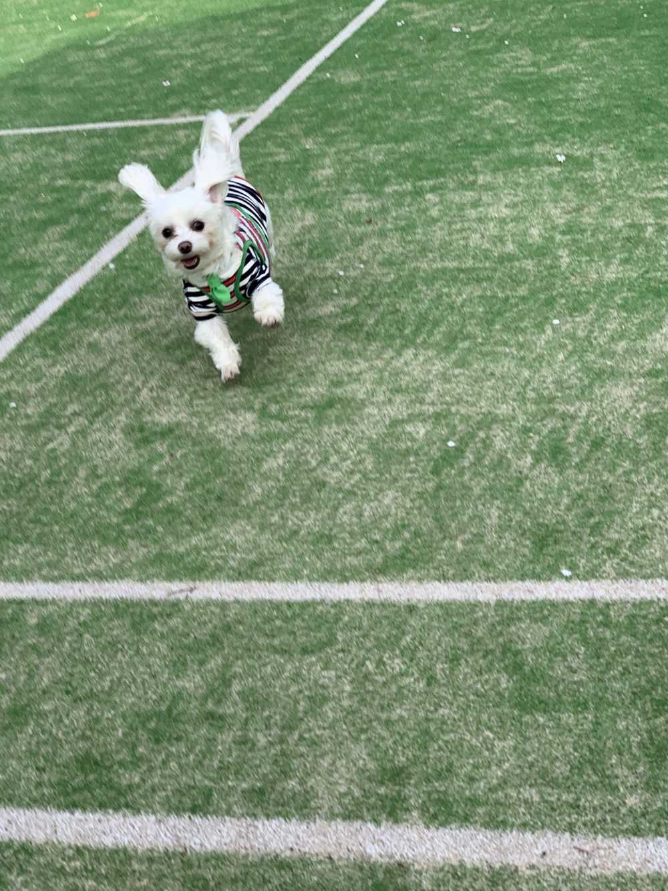
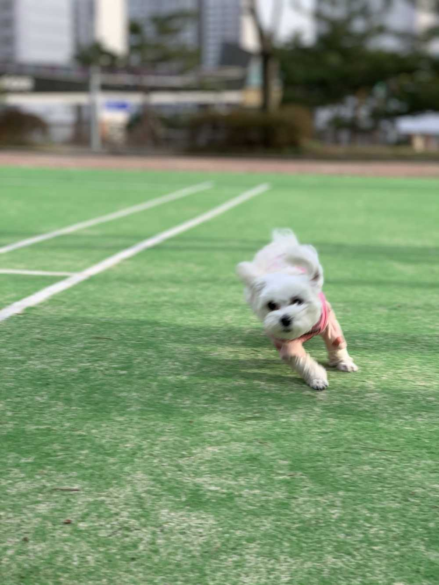
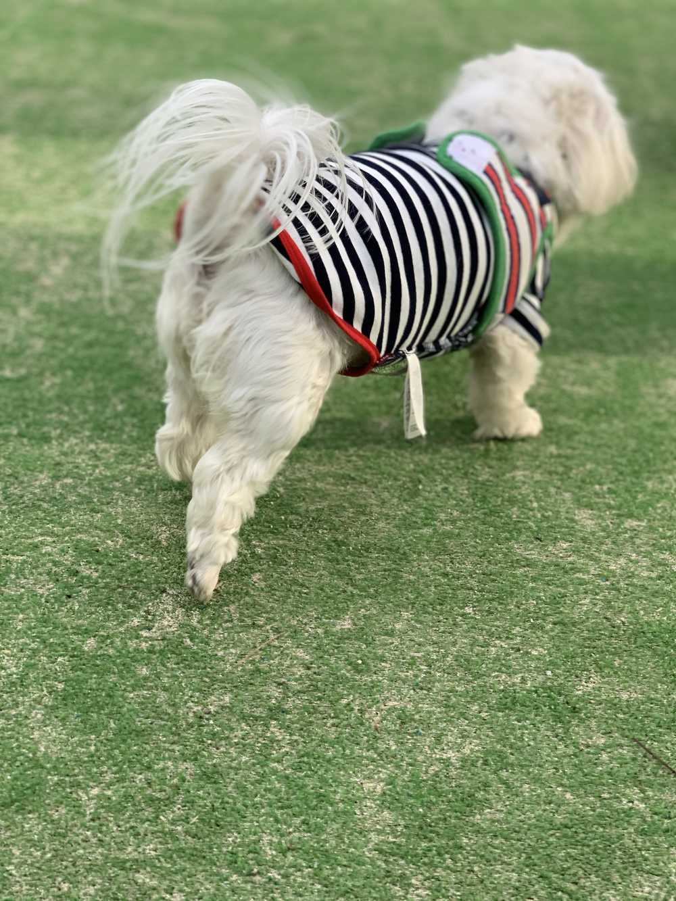

아니 그나저나
나는 정말 울 애들 데리고 나가면
항상 드는 생각이
‘내가 토끼를 키우고 있나...’


아니 근데

왜 너는 옷을
거꾸로 입었니....
하는 행동이 언니랑 똑같네
울 채리~
웅~ 내가 입힌거야🐾😛
생각해보니까
채리는 아무 잘못이 없네 헤헤
부런치 ㅋㅋㅋㅋ 오디잼 + 식빵
아침 ㅋㅋㅋㅋ 고구마 + 계란
점심 ㅋㅋㅋㅋ 참외 + 어포 + 백설기
Supper ㅋㅋㅋㅋ 약과 + 약밥 + 100% 오렌지 주스
Dinner (저녁) ㅋㅋㅋㅋ (이건 이따가 사진으로 공개)
디저트 먹을 때 ㅋㅋㅋㅋ (이제 시작 할 예정)
과일 먹을 때 ㅋㅋㅋㅋ ( 틈틈히 )
저 부런치는
우리 엄마가 ..
"너 잘 때 우린 부런치도 다 먹었어~"
라고 약밥을 드시며 하신 말씀